조경산업기사 (2015-05-31 기출문제)
1과목: 조경계획 및 설계
1. 대표적인 조선시대 전통정원의 특징에 해당하는 양식은?
- 정형식
- 대칭식
- 후원식
- 절충식
(정답률: 84%)

2. 시대적으로 가장 늦게 발생한 정원 양식은?
- 독일의 구성식 정원
- 스페인의 중정식 정원
- 영국의 사실주의 풍경식 정원
- 이탈리아의 노단건축식 정원
(정답률: 80%)
3. 조선시대의 별서가 아닌 것은?
- 담양 소쇄원
- 예천 초간정
- 보길도 부용동 정원
- 춘천 청평사 정원
(정답률: 70%)
4. 중국 소주에 있는 명나라때의 정원들이다. 오늘 날까지 대표적 명원으로 잘 보존되어 있는 것은?
- 소지원
- 서경경원
- 졸정원
- 서참의원
(정답률: 88%)
5. 그리스의 조경에 직접적인 관계가 없는 것은?
- 아카데미(Academy)
- 파라디소(Paradiso)
- 아고라(Agora)
- 아도니스 원(Adonis Garden)
(정답률: 75%)
6. 호주의 수도 캔버라(Canberra)의 도시 설계안 공모시에 채택된 설계가는?
- 알트맨(A.Altmann)
- 슈레버(A.Schreber)
- 에스테렌(Cornelius van Esteren)
- 그리핀(Walter Burley Griffin)
(정답률: 74%)
7. 석가산에 대한 설명으로 옳지 않은 것은?
- 지형의 변화를 얻기 위한 수법이다.
- 첩석성산은 석가산의 일종이다.
- 주로 흙이나 돌로 쌓아 만들었다.
- 고려시대부터 널리 사용되어 온 우리 고유의 정원 기법이다.
(정답률: 81%)
8. 다음 중 양화소록(養花小錄)에 관한 설명으로 옳지 않은 것은?(오류 신고가 접수된 문제입니다. 반드시 정답과 해설을 확인하시기 바랍니다.)
- 주로 초본식물에 대한 재배법을 다루고 있다.
- 이조 세종 때에 지어진 화훼원예에 관한 저술이다.
- 괴석(怪石)에 대한 것과 꽃을 분에 심어 가꾸는 법에 대해서도 적고 왔다.
- 고려의 충숙왕이 원나라에 갔다 돌아올 때 각종 진기한 관상식물을 많이 가져 왔다는 기록도 있다.
(정답률: 53%)
9. 다음 중 우리나라 최초의 국립공원으로 지정된 곳은?
- 태백산
- 지리산
- 한라산
- 설악산
(정답률: 92%)
10. 다음에서 설명하는 계획은?
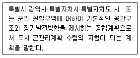
- 지구단위계획
- 도시·군관리계획
- 광역도시계획
- 도시·군기본계획
(정답률: 80%)
11. 다음 설명과 관련된 항목은?
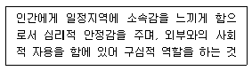
- 혼잡성
- 공적 공간
- 개인적 공간
- 영역성
(정답률: 81%)
12. 다음 중 현명한 토지이용계획과 자원 계획을 수렵하는 기본은?
- 우리의 건강과 행복을 지켜주는 자연계를 이해하고 유지하는 것
- 생태적으로 민감한 곳, 생산성이 높은 곳, 빼어난 자연경승을 훼손하는 것
- 보존 대상 주변을 둘러싸는 보호 구역을 보전 하고, 보전 목적에 부합하는 용도 이외의 것으로 사용하는 것
- 자연훼손 위험성이 큰 곳만을 개발하고, 주변환경을 무시한 계획
(정답률: 85%)
13. 조경설계의 목적과 목표를 예를 들어 설명하고 있다. 광장입구를 대상으로 설계작업을 진행하는 경우에 목적(goal)에 해당되는 것은?
- 스케일 상으로 공적(public)인 입구를 만든다.
- 인식하기 쉽도록 입구의 바닥포장에 변화를 준다.
- 광장으로 들어가는 입구는 뚜렷이 알아볼 수 있도록 한다.
- 입구로부터 광장으로의 시야는 어느 정도 트이도록 한다.
(정답률: 74%)
14. ‘광막한 바다나 끝없는 초원의 풍경’과 같은 경관은?
- 전(panoramic) 경관
- 위요(enclosure) 경관
- 초점(focal) 경관
- 관개(canopied) 경관
(정답률: 87%)
15. 보색에 관한 설명으로 틀린 것은?
- 물감에서 보색의 조합은 빨강 ~ 청록, 연두 ~ 보라이다.
- 보색인 2색은 색상환상에서 90° 위치에 있는 색이다.
- 두 가지 색의 물감을 섞어 회색이 되는 경우, 그 두색은 보색관계이다.
- 두 가지 색광을 섞어 백색광이 될 때 이 두가지 색광을 서로 상대색에 대한 보색이라고 한다.
(정답률: 72%)
16. 그림은 어느 재료 단면의 경계를 표시한 것인가?
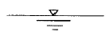
- 흙
- 물
- 암반
- 잡석
(정답률: 88%)
17. 미적으로 아름다운 공간이 구성되려면 통일성과 다양성이 존재하여야 한다. 다음 중 다양성을 달성하기 위한 수법이 아닌 것은?
- 변화
- 강조
- 리듬
- 대비
(정답률: 77%)
18. 다음 중 조경설계기준상의 휴게시설 설계기준으로 옳지 않은 것은?
- 야외탁자의 너비는 64 ~ 80cm를 기준으로 한다.
- 평상 마루의 높이는 35 ~ 41cm를 기준으로 한다.
- 앉음벽은 짧은 휴식에 적합한 재질과 마감방법으로 설계하며, 높이는 34 ~ 46cm를 원칙으로 한다.
- 그늘시렁(파골라)은 태양의 고도 및 방위각을 고려하여 부재의 규격을 결정하며, 해가림 덮개의 투영밀폐도는 50%를 기준으로 한다.
(정답률: 87%)
19. 투시도에 관한 설명으로 옳지 않은 것은?
- 화면에 평행하지 않은 평생선들은 소점으로 모인다.
- 투시도에서 수평면은 시점높이와 같은 평면위에 있다.
- 투시도에 있어서 투사선은 관측자의 시선으로서, 화면을 통과하여 시점에 모이게 된다.
- 투사선이 1점으로 모이기 때문에 물체의 크기는 화면 가까이 있는 것보다 먼 곳에 있는 것이 커 보인다.
(정답률: 85%)
20. 도면을 사용 목적, 내용, 작성 방법 등에 따라 분류할 때 사용목적에 따른 분류에 속하는 것은?
- 공정도
- 부품도
- 계획도
- 스케치도
(정답률: 65%)
2과목: 조경식재
21. 다음 중 금낭화(Dicentra spectabilis Lem)에 관한 설명으로 틀린 것은?
- 현호색과(科)에 속하는 식물이다.
- 아름다운 주머니를 닮은 꽃이란 뜻이다.
- 한해살이풀로 무릎 높이까지 자란다.
- 남부지방은 3월 말, 중부지방에서는 4~6월에 꽃을 피운다.
(정답률: 66%)
22. 다음 중 수생식물의 분류 중 정수성 식물에 해당하지 않는 것은?
- 갈대
- 생이가래
- 애기부들
- 벗풀
(정답률: 72%)
23. 다음 수종 중 복엽인 것은?
- Acer mono
- Acer palmatum
- Acer negundo
- Acer pseudosieboldinum
(정답률: 69%)
24. 잎이 황색 또는 갈색으로 물드는 수목이 아닌 것은?
- 붉나무
- 은행나무
- 양버즘나무
- 튤립나무
(정답률: 77%)
25. 다음 중 상록성인 식물은?
- 모과나무
- 채진목
- 산사나무
- 비파나무
(정답률: 67%)
26. 다음 그림(입면·단면도)과 같은 고속도로 중앙 분리대의 식재 방법으로 가장 적합한 것은?
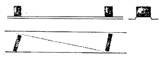
- 랜덤식
- 무늬식
- 루버식
- 산울타리식
(정답률: 81%)
27. 향기 식물원을 조성하기에 적합한 방향성 식물이 아닌 것은?
- 꽃향유
- 석창포
- 얼레지
- 배초향
(정답률: 71%)
28. 고속도로 조경에서 노선의 변화를 운전자에게 예지(豫知)시켜 주기 위한 식재수법은?
- 지표식재
- 조화식재
- 완충식재
- 시선유도식재
(정답률: 88%)
29. 한국잔디(들잔디) 종자의 적정 파종량은?
- 2.5 ~ 5 g/m2
- 5 ~ 15 g/m2
- 20 ~ 35 g/m2
- 35 ~ 50 g/m2
(정답률: 60%)
30. 다음 중 잎 보다 꽃이 먼저 피는 수종이 아닌 것은?
- 서어나무
- 히어리
- 자두나무
- 모과나무
(정답률: 52%)
31. 종자번식작물에서는 자식 또는 동계교배에 의해 키메라(chimera)를 해소하고 완전한 돌연변이체가 얻어진다. 다음 중 키메라의 소멸 방법으로 옳지 않은 것은?
- 종자의 이용
- 부정아의 이용
- 잠복아의 이용
- 조직배양의 이용
(정답률: 46%)
32. 노거목 (대교목) 이식 전 뿌리돌림 시기로 가장 적당한 것은?
- 장마철
- 겨울
- 이름 봄
- 가을
(정답률: 73%)
33. 다음 그림은 수목의 어떤 번식 방법인가? (문제 오류로 실제 시험에서는 모두 정답처리 되었습니다. 여기서는 1번을 누르면 정답 처리 됩니다.)
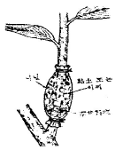
- 휘묻이
- 묻어떼기
- 가지꽂이
- 깎기눈접
(정답률: 86%)
34. 다음 중 수변부(水邊部) 형태에 따른 평가 기준 중 매우 우수에 해당하는 것은?
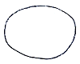
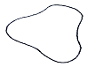
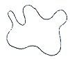
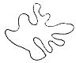
(정답률: 73%)
35. 다음 중 수목 번식을 위한 종자 파종시 종자수가 가장 적게 소요되는 것은?
- 낙엽송
- 느티나무
- 자작나무
- 칠엽수
(정답률: 62%)
36. Pinus densiflora Siebold & Zucc의 특징에 해당되지 않은 것은?
- 양수이다.
- 내건성이 있다.
- 심근성 수종이다.
- 천이 후기에 출현한다.
(정답률: 61%)
37. 다음 중 일반적으로 접붙이기 시 쓰이고 있는 바탕나무의 종류가 틀린 것은?
- 태산목 – 목련
- 장미 – 해당화
- 라일락 – 쥐똥나무
- 백목련 – 일본목련
(정답률: 58%)
38. 토양의 화학적 성질 중 토양산도(pH)에 관한 설명으로 틀린 것은?
- 토양 pH는 양분의 가용성을 결정하는 역할을 한다.
- 토양 pH가 증가하면 토양용액 내 칼슘, 칼륨, 마그네슘의 양이 감소한다.
- 토양 pH 6~7은 식물양분의 용해도가 최대를 이루는 범위이다.
- 토양 pH가 낮아지면 세균과 방사선균의 수와 활동이 줄어들게 된다.
(정답률: 51%)
39. 다음 중 옥상 및 인공지반의 식재 식물을 선택할 때 우선적으로 고려해야 할 사항은?
- 주변 환경에 내성이 강한 식물
- 생장속도가 빠르고, 관리가 용이한 식물
- 향토식물, 관상가치가 있는 식물
- 토양층의 깊이와 식물의 크기
(정답률: 81%)
40. 수목의 내동성은 배수상태, 위치, 환경조건에의 적응능력과 관련된다. 수목의 생리적 요인 설명으로 틀린 것은?
- 수분투과성이 높은 세포는 세포내 결빙 가능성이 낮아 내동성이 높다.
- -SH기(基)가 많은 세포는 –SS기가 많은 것보다 원형질의 파괴가 커서 내동성이 작다.
- 점도(粘度)가 낮고 연도(軟度)가 높은 세포는 기계적 견인력을 적게 받기 때문에 내동성이 크다.
- 친수성 콜로이드가 많으면 세포내의 결합수가 많아지고 자유수(自由水)가 적어 세포의 결빙이 경감되므로 내동성이 크다.
(정답률: 61%)
3과목: 조경시공
41. 다음 중 절리가 적은 연암, 경암의 비탈면에 주로 사용되며, 시공방식으로는 건식법과 습식법을 활용하는 녹화공법은?
- 식생매트 공법
- 식생구멍 심기
- 떼 붙이기
- 식생기반재 뿜어붙이기
(정답률: 56%)
42. 조경수목 고사식물의 하자보수에 대한 설명으로 맞는 것은?
- 지급수목이 20% 미만 고사되었을 때 전량 하자보수가 면제된다.
- 하자보수식재는 하자가 확인된 후 2년 이내에 이행한다.
- 준공후 유지관리를 지급하지 않은 상태에서 혹한, 혹서, 가뭄 염해 등에 의한 고사는 하자 보수가 면제된다.
- 수목은 수관부 가지의 약 1/2 이상이 고사하는 경우에 고사목으로 판정한다.
(정답률: 60%)
43. 등경사선 지형에서 축척이 1:6000, 등고선 간격은 6m, 제한경사를 5%로 할 때, 각 등고선간의 도상거리는?
- 1.0 cm
- 1.5 cm
- 2.0 cm
- 2.5 cm
(정답률: 46%)
44. 목재방부 처리인 가압처리법의 장점에 해당하지 않는 것은?
- 많은 양의 방부제를 침투시킨다.
- 방부제가 깊고, 균일하게 침투한다.
- 언제나 처리 조건을 조절할 수 있다.
- 방부제를 부분적으로 주입하는 것이 가능하다.
(정답률: 67%)
45. 다음 테니스 코트의 포장재료를 단면 순서 (a – b – c – d – e – f)에 맞게 [보기]에서 골라 옳게 쓴 것은?
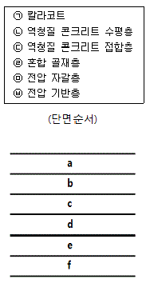
- ㉠ - ㉡ - ㉢ - ㉣ - ㉤ - ㉥
- ㉠ - ㉡ - ㉢ - ㉥ - ㉣ - ㉤
- ㉠ - ㉢ - ㉡ - ㉥ - ㉣ - ㉤
- ㉠ - ㉢ - ㉡ - ㉣ - ㉤ - ㉥
(정답률: 70%)
46. 시멘트의 응결에 관한 설명 중 옳지 않은 것은?
- 습도가 낮으면 응결이 빨라진다.
- 분말도가 크면 응결이 빨라진다.
- 풍화되었을 경우 응결이 빨라진다.
- 온도가 높을수록 응결이 빨라진다.
(정답률: 59%)
47. 대리석의 특징으로 옳지 않은 것은?
- 석질이 치밀하고 견고하다.
- 내화성이 높고 산성비에 강하다.
- 외관이 미려하여 조각재로도 사용된다.
- 강도는 높지만 실외용으로는 적합하지 않다.
(정답률: 71%)
48. 수목을 높이 기준에 따라 굴취시 야생일 경우에는 굴취품의 최대 몇 %를 가산할 수 있는가?
- 5%
- 7%
- 10%
- 20%
(정답률: 76%)
49. 고온으로 가열하여 소정의 시간동안 유지한 후에 냉수, 온수 또는 기름에 담가 급랭하는 처리로 강도 및 경도, 내마모성의 증진을 목적으로 실시하는 강의 열처리법은?
- 담금질(quenching)
- 불림(normalizing)
- 뜨임(tempering)
- 풀림(annealing)
(정답률: 69%)
50. 다음 중 공사비 산정기준이 맞는 것은?
- 산업안전보건관리비 : (재료비+노무비)×비율
- 산재 보험료 : 직접노무비×비율
- 환경보전비 : (재료비+노무비)×환경보전비율
- 일반관리비 : 순공사원가×일반관리비율
(정답률: 69%)
51. 석재를 한 변이 15~25cm 정도의 정방형 각석으로 가공하여 포장하는 것으로서 중후하고 고급스런 느낌을 가지거나 시공비가 고가인 포장 재료는?
- 화강석 판석 포장
- 사고석 포장
- 해미석 포장
- 석재타일 포장
(정답률: 62%)
52. 공중촬영한 사진 1매의 크기가 10cm × 10cm일 때 축척이 1/5,000 이면 사진 1매에 들어간 실제 면적은 얼마인가?
- 25 a
- 250 a
- 25 ha
- 250 ha
(정답률: 71%)
53. 다음 중 등고선의 성질 설명으로 옳은 것은?
- 등고선은 동굴과 절벽에서는 교차 한다.
- 등고선은 지표의 최대경사선 방향과 평행하다.
- 등고선의 간격이 좁다는 것은 지표의 경사가 완만하다는 것을 뜻한다.
- 등고선은 도면 내에서는 폐합하지만 도면 외에서는 폐합하지 않는다.
(정답률: 74%)
54. 민속놀이시설과 관련된 표준시방 내용 중 ( ) 안에 적합한 용어는?
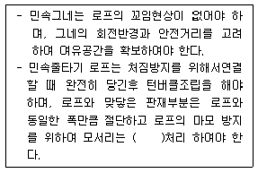
- 마운딩
- 라운딩
- 사운딩
- 보링
(정답률: 72%)
55. 불도저(bull dozer)의 경제적 운반거리로 가장 적합한 것은?
- 60m
- 120m
- 150m
- 200m
(정답률: 71%)
56. 통계적 품질관리에서 측정값의 산포상태를 표현하는 용어가 아닌 것은?
- 분산
- 범위
- 중앙치
- 표준편차
(정답률: 66%)
57. 재료의 할증율에 관한 설명으로 옳은 것은?
- 수목은 할증을 고려하지 않는다.
- 철근 구조물용 레디믹스트콘크리트의 할증율은 2% 이다.
- 석재 중 마름돌용 원석의 할증율은 20% 이다.
- 붉은 벽돌의 할증율은 시멘트 벽돌의 할증율보다 더 작다.
(정답률: 65%)
58. 다음 중 호우 발생시 옹벽 및 석축의 붕괴가 자주 발생하는 원인으로 가장 많은 것은?
- 지반강화
- 부등침하
- 유하시간 단축
- 지하수위 상승으로 인한 수압증가
(정답률: 65%)
59. 구조물에 하중이 작용할 때 발생하는 지점(support)과 반력(reaction)에 대한 설명으로 옳지 않은 것은?
- 고정지점은 지단에 직교하는 방향으로만 부재의 운동이 구속되어 이동 및 회전이 가능하므로 고정지점에는 수직반력이 생기게 된다.
- 회전지점은 돌쩌귀나 간단한 정착볼트로 되어 있는 부재지단과 같이 회전은 가능하지만 어느 방향으로도 이동될 수 없도록 만들어져 있다.
- 구조물에 하중이 작용할 때 구조물이 정지상태에 있기 위해서는 구조물을 지지하기 위한 지점이 있어야 하고, 각 지점에는 하중과 평형을 유지하기 위해 반력이 생긴다.
- 구조물의 반력은 수평반력, 수직반력, 모멘트 반력의 3가지가 있으며, 구조물이 외력에 의해 비틀릴 경우에는 비틀림반력도 발생된다.
(정답률: 43%)
60. 그림과 같은 단순보에 하중이 작용할 때 점 B에 작용하는 굽힘 모멘트의 크기는 몇 Nm인가?
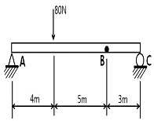
- 26.7
- 53.3
- 80.0
- 110
(정답률: 52%)
4과목: 조경관리
61. 탄질비가 높은 유기물을 토양에 사용하면 토양 중에 작물이 이용할 수 있는 질소를 유기물을 분해시키는 미생물들이 이용하게 되어 작물은 질소를 이용할 수 없게 되는 현상을 의미하는 것은?
- 탈질
- 질소기아
- 질산화
- 광질산화
(정답률: 73%)
62. 다음 중 이중기생을 하는 녹병균의 연결로 틀린 것은?
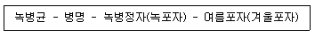
- Cronartium ribicola-잣나무털녹병-잣나무-까치밥나무
- Coleosporium phellodendri – 소나무잎녹병 – 소나무 – 황벽나무
- Coleosporium asterum – 소나무잎녹병 – 소나무 – 잔대
- Melampsora larici-populina – 포플러잎녹병 – 낙엽송 – 포플러
(정답률: 59%)
63. 당년지에서 개화하기 때문에 2~3년의 굵은 가지를 전정하여도 개화에 영향이 크지 않는 수종은?
- 배롱나무
- 벚나무
- 목련화
- 꽃사과
(정답률: 61%)
64. 대기오염의 2차적 오염물질 중에서 주로 오존(O3)에 의한 피해를 입는 세포는?
- 상피세포
- 엽육세포
- 표피세포
- 책상조직세포
(정답률: 61%)
65. 수목 관리시 보호 살균제인 동제(석회보르도액) 제조 방법 및 사용용도 등의 설명 중 틀린 것은?
- 병원균의 침입을 예방하는 것이 주 목적이다.
- 황산동과 생석회를 따로 만든 다음 황산동과 진흙으로 조제한다.
- 황산동과 생석회를 따로 만든 다음 석회유에 다 황산동액을 부어 혼합한다.
- 황산동이 6g, 생석회가 6g 이면 6-6식 보르도액이라 한다.
(정답률: 59%)
66. 목재 방균제로 이용되는 수용성 방부제의 설명으로 틀린 것은?
- 열화생물에 대한 독성은 양호하다.
- 염류의 종류에 따라 금속부식성이 있다.
- 도장 및 접착 가공성은 처리재가 건조된 후 불량하다.
- 취급의 안정성 고려는 비소화합물이 함유된 것이 있음으로 유의한다.
(정답률: 62%)
67. 모과나무 붉은별무늬병의 특징에 해당되는 것은?
- 병원균은 기주교대를 한다.
- 병징은 열매에만 나타난다.
- 효과적인 살균제가 개발되지 않았다.
- 밤에 보면 병징에 붉은 형광이 나타난다.
(정답률: 59%)
68. 농약의 구비조건으로 가장 거리가 먼 것은?
- 독성이 강할 것
- 약해가 없을 것
- 약효가 확실할 것
- 저장성이 좋을 것
(정답률: 78%)
69. 다음 중 예취(刈取, mowing)의 설명으로 옳은 것은?
- 잔디의 분얼(分蘖)을 촉진시키며, 미관을 높이기 위해 실시한다.
- 우천으로 인하여 그린에 물기가 많으면 예취작업시 잔디 가루의 비산이 적어지므로 신속히 작업하는 것이 좋다.
- 그린의 낮고 잦은 예취는 뿌리의 깊이, 탄수화물의 축적, 회복능력 등에 대한 내성을 좋게하여 생육상 좋은 영향을 끼친다.
- 그린을 1/2등분하고 양끝에서 예취를 시작하며 직선으로 왕복주행하며, 위→아래, 아래→위를 기본으로 하여 매일 잔디깎는 방향을 같게 준다.
(정답률: 64%)
70. 조경물 자체와 사회적 요구의 질적·양적인 변화는 조성된 조경물의 당초 관리계획에 따라 추적 검토되어야 하는데, 이러한 검토내용에 해당되지 않는 것은?
- 구체적인 시민들의 요구
- 관리조직과 인원에 대한 검토
- 관리단계에서 지장이 되는 원인의 분석
- 이용조사에 의한 시민요구의 구체적 행동의 평가
(정답률: 62%)
71. 화살표형 네트워크 작성시의 기본 규칙으로 옳지 않은 것은?
- 가능한한 요소작업 상호간의 교차를 피한다.
- 네트워크상 작업을 표시하는 화살선이 회송되어서는 아니된다.
- 네트워크의 개시와 종료 결합점은 각기 반드시 하나씩 이어야 한다.
- 네트워크에서 쓰이는 소요시간은 작업에 필요한 최소한의 시간으로 휴일, 우천 등의 휴업을 포함하지 않는다.
(정답률: 68%)
72. 관거나 구거의 체수(滯水) 원인으로 가장 관련이 먼 것은?
- 먼지
- 오니
- 토사
- 블록
(정답률: 69%)
73. 식재지의 멀칭(mulching)을 통하여 기대되는 효과가 아닌 것은?
- 토양 경도를 증가 시킨다.
- 여름철 토양온도의 상승을 억제한다.
- 유익한 토양미생물의 생장을 촉진한다.
- 토양으로부터 수분증발을 감소시킨다.
(정답률: 73%)
74. 다음 중 레크레이션 공간의 관리방법이 아닌 것은?
- 완전 방임형 관리전략
- 폐쇄 후 자연 회복형
- 계절별 순환 관리형
- 순환식 개방에 의한 휴식 기간 확 보
(정답률: 52%)
75. 분비물에 의해 그을음병을 유발시키는 해충은?
- 솔잎혹파리
- 소나무좀
- 솔수염하늘소
- 소나무가루깍지벌레
(정답률: 61%)
76. 다음 중 조경식물의 생물학적 방제를 위한 천적의 선택시 고려사항이 아닌 것은?
- 증식력이 큰 것
- 단식성 일 것
- 2차 기생봉이 없을 것
- 성비(性比)가 1에 가까울 것
(정답률: 61%)
77. 농약 사용시 취급의 주의를 위하여 서로 다른 색깔로 병 뚜껑이나 라벨을 만들어서 쉽게 알아볼 수 있게 구분하고 있는데, 다음 중 연결이 적합한 것은?
- 녹색 : 제초제
- 노란색 : 보조제
- 흰색 : 생장조절제
- 분홍색 : 살균제
(정답률: 68%)
78. 다음 중 수목 관리시 지주목의 필요성 중 장점이 아닌 것은?
- 수고 생장에 도움을 준다.
- 바람에 의한 피해를 줄일 수 있다.
- 수간의 굵기가 균일하게 생육할 수 있도록 해준다.
- 지지된 부분의 수피박피로 잔가지의 발생을 돕는다.
(정답률: 71%)
79. 다음 중 수목의 시비와 관련된 설명으로 틀린 것은?
- 시비 시에 비료는 가급적 뿌리에 직접 닿을 정도까지 작업하여야 한다.
- 방사형 시비는 1회시에는 수목을 중심을 2개소에, 2회시에는 1회시비의 중간위치 2개소에 시비후 복토한다.
- 기비는 늦가을 낙엽후 10월 하순~11월 하순의 땅이 얼기 전까지, 또는 2월 하순~3월 하순의 잎피기 전까지 사용한다.
- 환상시비는 뿌리가 손상되지 않도록 뿌리분 둘레를 깊이 0.3m, 가로 0.3m, 세로 0.5m 정도로 흙을 파내고 소요량의 퇴비(부숙된 유기질비료)를 넣은 후 복토한다.
(정답률: 75%)
80. 수목 병원채가 월동하는 장소가 아닌 것은?
- 낙엽
- 대기
- 토양
- 뿌리
(정답률: 81%)